Finishing highschool: It is one of my achievements. I believe that it is true because this is the
time when almost all of us learns to depend on himself and learns some hints on the path
that one may choose to live with.
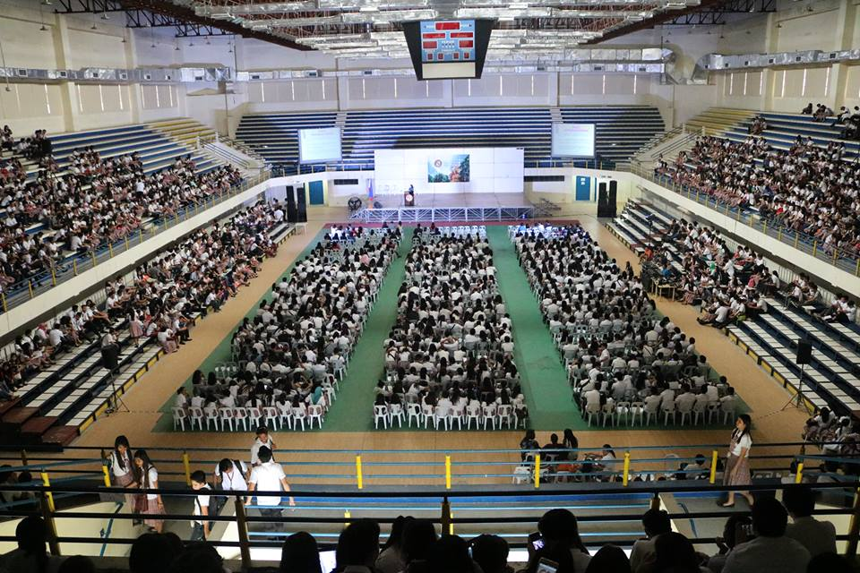
Entering college: For me, I is a great achievements. I see it as a first step on becoming what I want
to be and who I want to be in this life.
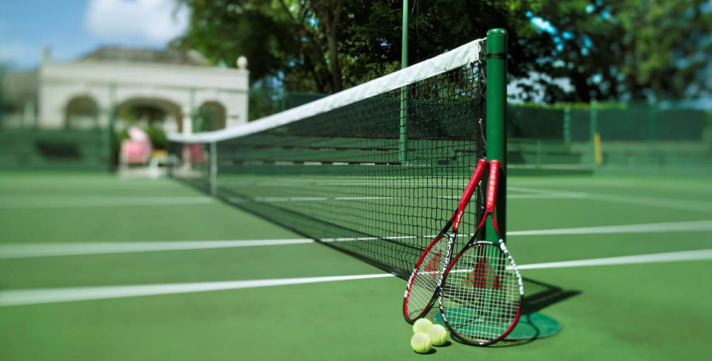
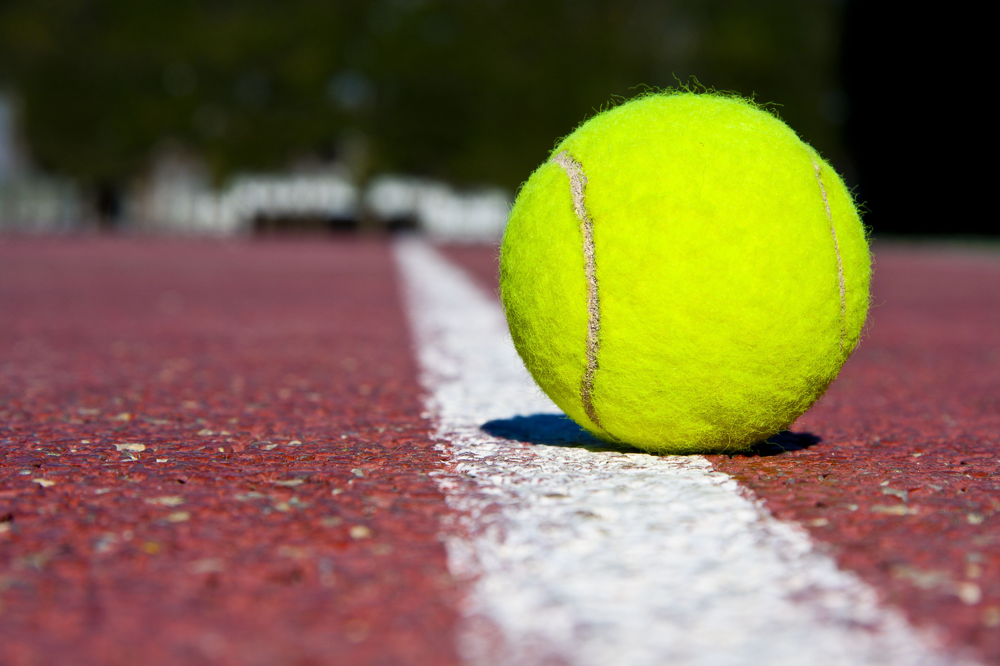
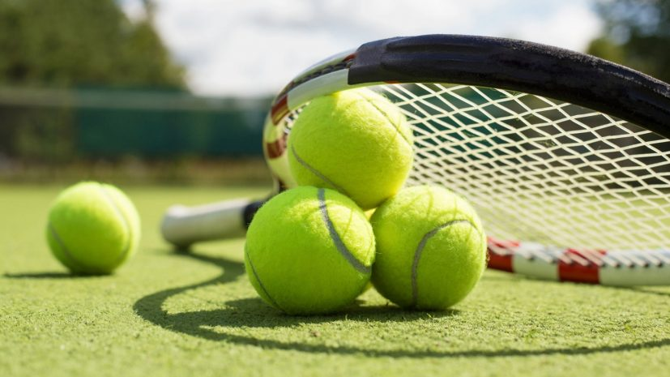
Tennis Championship: Winning in sports championships is certainly a great achivement. It showcases
one's physical and intellectual capacities, and also it reflects one's hard work and discipline.
I can always remember those hard trainings and hard lessons.
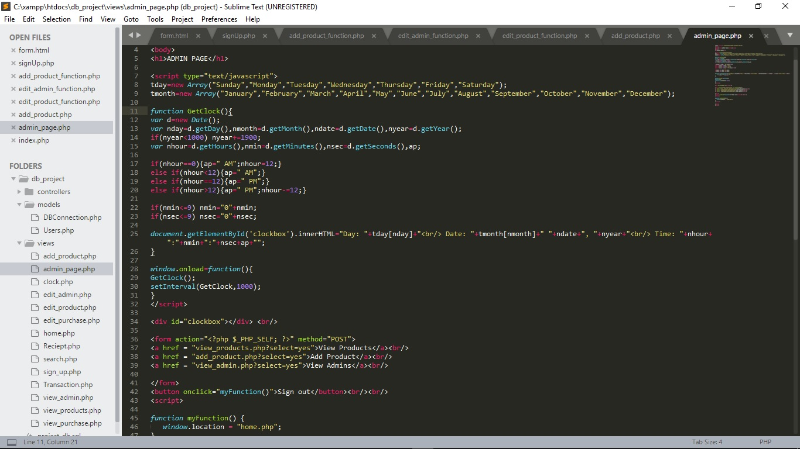
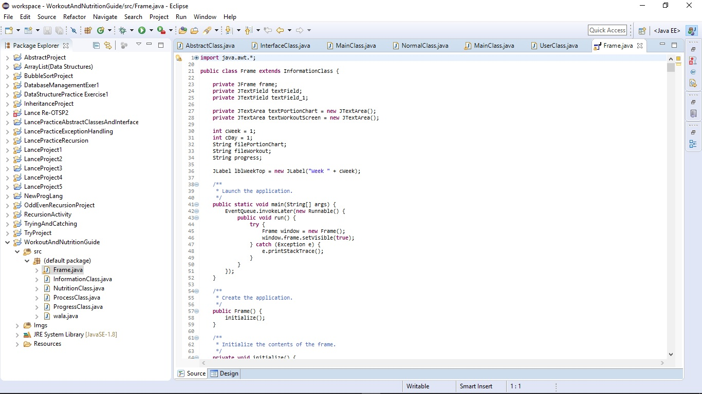
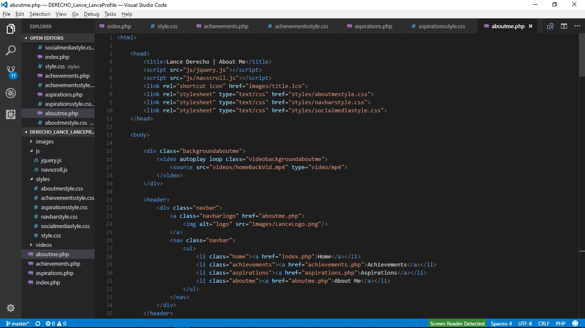
Learning to Code: Being able to write codes and programs is a very great thing for me because I have
a huge passion for it. Not only do I have passion for it, but I also have an enormous interest in it.
I believe that it is a great privilage to know how to code.
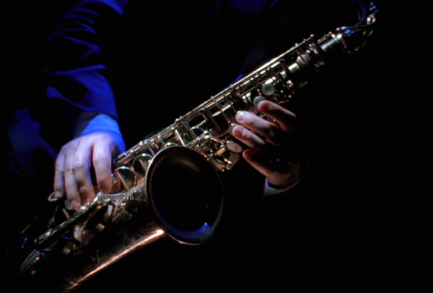
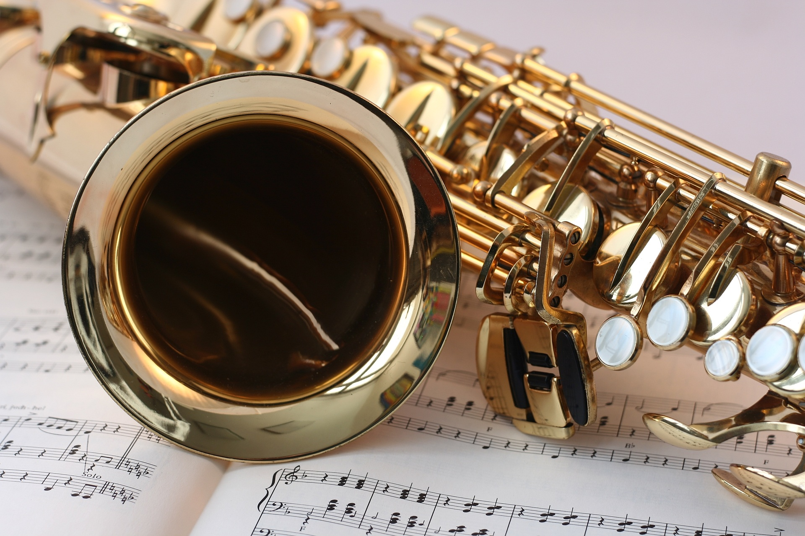
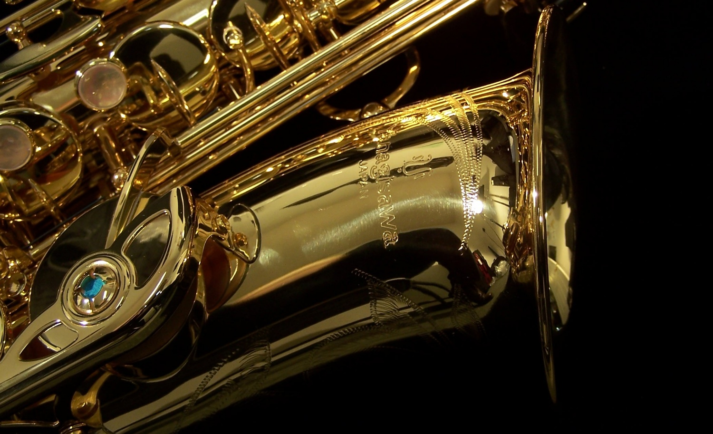
Winning Band Contests: Learning to play a musical instrument, especially hearing your own sound when
playing an alto saxophone is a very heart-warming and soul-refreshing experience. Winning a contest
while playing one is a very gigantic achievement, and a very delighting one.
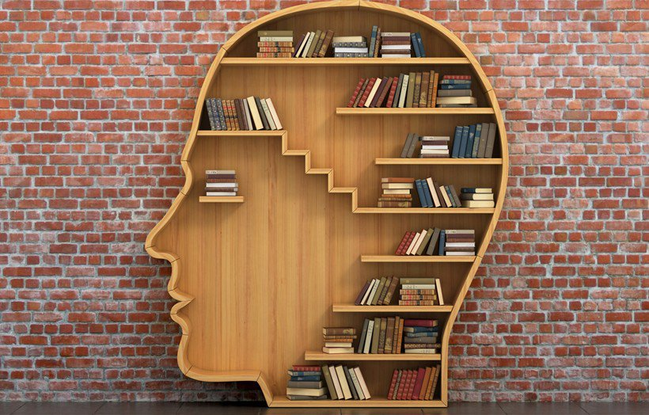
Reading Lots of Books: Some years ago, I set a goal to read one book every month. I skipped a lot of months
but still ended reading lots of books and learned lots of things from the books that I read. It takes
a lot discipline and self-control to read a book ,so because of that reason, I can consider it a great
achievement on my part. Not just finishing lots of books, but learning a lot of things.
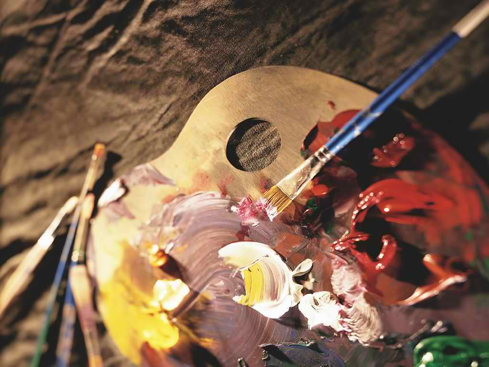
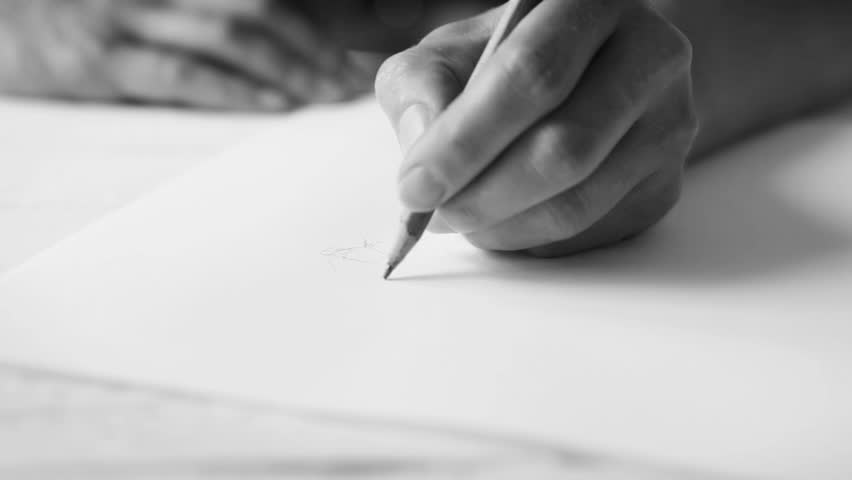
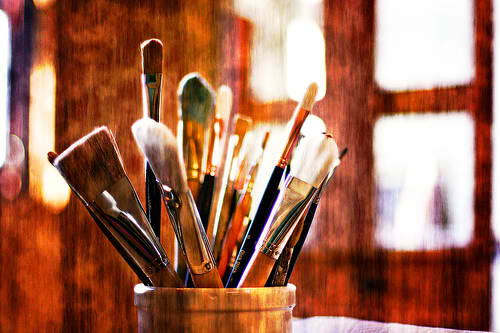
First Steps on Learning Visual Arts: Being able to draw, to paint, etc. has my goal some years ago.
And taking steps onto your goal is considered an achievement. Adding little by little achievements,
you will reach your desired goal. So this is a big step and a big achievement for me.


 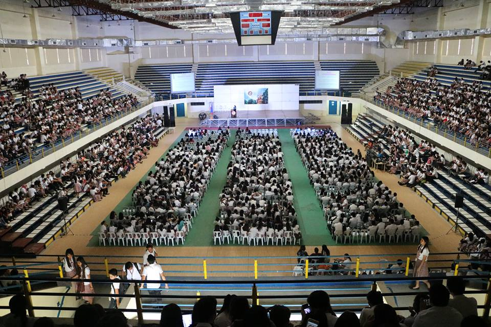
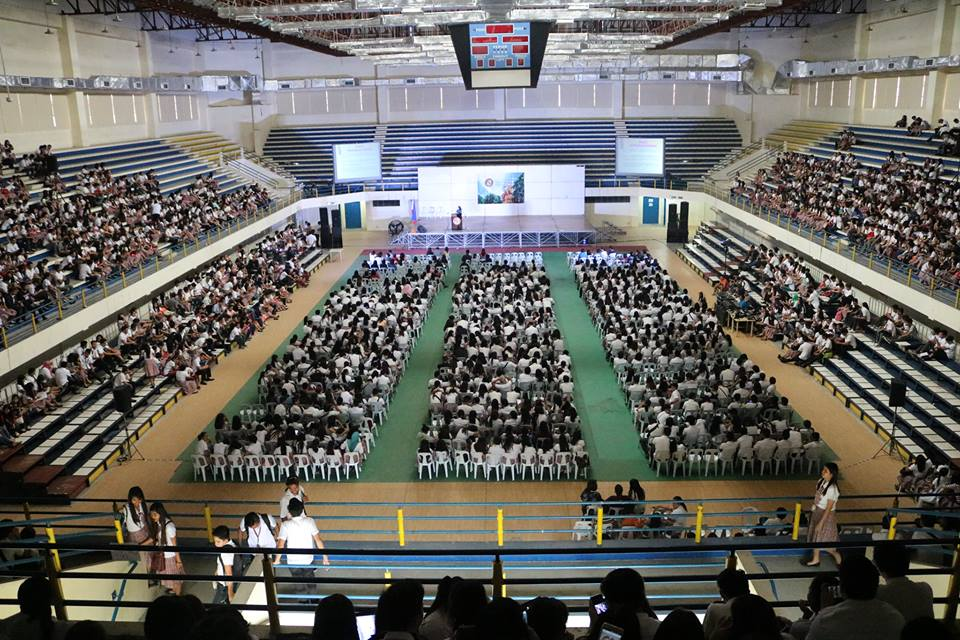
 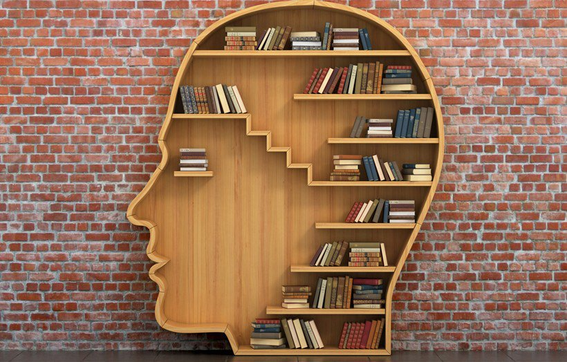
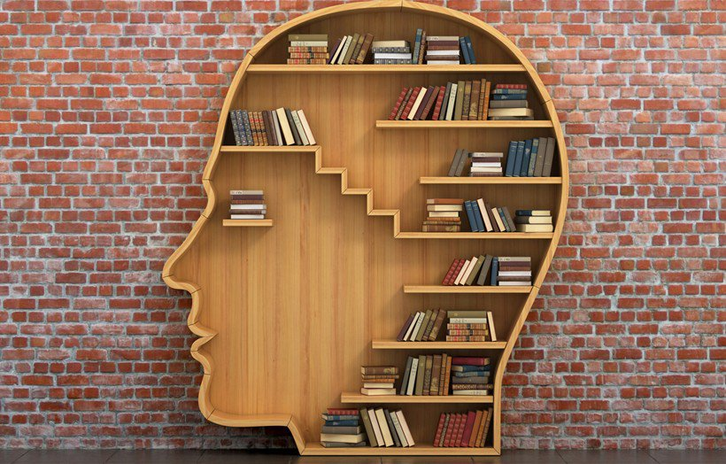